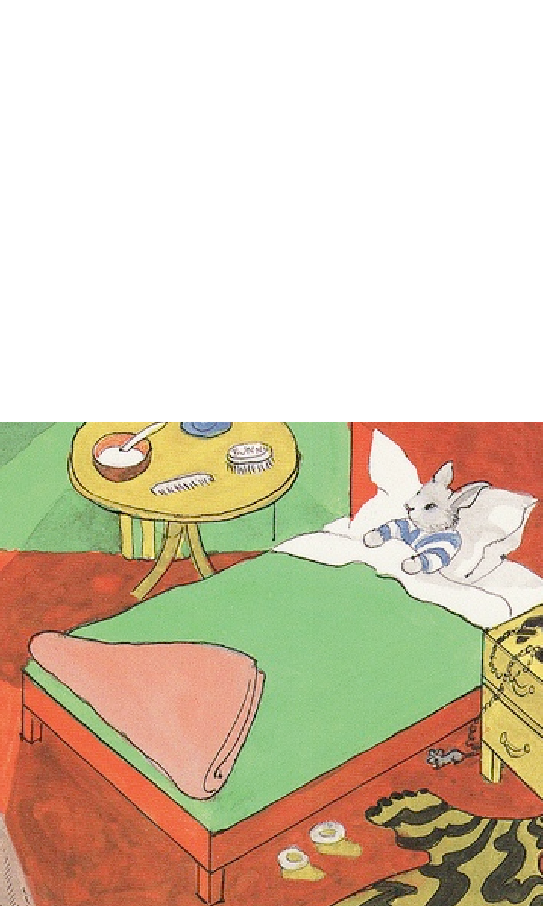

짝사랑 하는 사람이 생겼다.
망했네.
이럴 줄 알았다.
이번이 몇 번째더라.
그런데 뭔가 다른 느낌이 들어
나도 이제는 모르겠다.
열이 너무 많이 나
보고싶다.
진짜 바보 같다.
나를 이상하게 생각하지 않을까?
하루종일 생각난다
지금 말하기엔 너무 늦었겠지?
나를 좋은 사람으로 기억해줘
이 모든건 언젠가 다 지나가겠지
지나고 나면 별 거 아니겠지
나를 기억할까
나를 잊었을까
매일 들었던 노래가 요즘따라 슬프게 느껴진다.